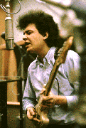
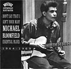

- ATB's Who's Who -
- ATB's Who's Who -
Родился и вырос в Чикаго. С очень раннего возраста, чтобы послушать блюз, проходил в "черные"клубы, что в то время было небезопасно для белого подростка. Видимо, обладал исключительными способностями, поскольку ему давали уроки и позволяли выйти на сцену для совместного джэма лидеры чикагского блюза, как старшего поколения (Мадди Уотерс (Muddy Waters)), так и новой волны Уэст-Сайд-блюза (Отис Раш (Otis Rush) и Мэджик Сэм (Magic Sam)). Вместе с Ником Грэвинитес (Nick Gravenites), Чарли Масселуайтом (Charlie Musselwhite) и Полом Баттерфилдом (Paul Butterfield) играл в первых чикагских белых блюзбэндах, основаших стиль "блюз-рок".  Принял участие в записи первых двух альбомов Блюзбэнда Пола Баттерфилда. Его игра была поразительно новаторской для своего времени и оказала непосредственное влияние на ряд восходивших в тот момент звезд рок-гитары, которым предстояло диктовать гитарную моду к началу 70-х: Эрик Клэптон (Eric Clapton), Дюан Эллман (Duane Allman), Джонни Уинтер (Johnny Winter) и Джимми Пейдж (Jimmy Page). Боб Дилан (Bob Dylan) был свидетелем вызвавшего скандал выступления Блюзбэнда Пола Баттерфилда на фолк-фестивале в Нью-Порте 1965 года, и именно под этим впечатлением решил отказаться от чисто акустического звучания. На запись этапных "электрических"альбомов Дилан пригласил гитаристом именно Майка Блумфилда, чья гитара во многом определяет их звучание. Музыка Блумфилда звучит в культовых фильмах десятилетия: "Путешествие"(The Trip), "Средний кайф"(Medium Cool) и "Крутой"(Bad) Энди Уорхолла (Andy Warhol). В 1968г. со старым другом Ником Грэвинитес Блумфилд создает группу "Электрический Флаг" (Electric Flag) с участием медной секции, положившую начало прогрессив-джаз-блюз-року (в ряду с "Блад, Свет Фнд Тиарз" (Blood, Sweat & Tears), "Чикаго"(Chicago). Группа просуществовала всего полтора года, и только первый альбом был встречен хорошо публикой и критикой. С участием двух других звезд 60-х: Стивеном Стиллзом (Stephen Stills) и Элом Купером (Al Cooper) записал альбом "Суперсешн"- сенсацию, обернувшуюся провалом. Неудачей обернулись и следующие суперруппы: "Триумвират" с участием пианиста Доктора Джона(Dr.John) и гитариста Джона Хэммонда, мл.(John Hammond, jr.) и "КГБ" (KGB). Так же неудачно закончилась попытка воссоединения "Электрик Флэг" в 1974г.. Во второй половине 70-х Блумфилд зарабатывал на жизнь, записывая музыку к порнографическим фильмам, снимавшимся в Калифорнии. У него были серьезные проблемы со здоровьем, вызванные наркоманией. Малобюджетные альбомы этого периода оставляют грустное впечатление. Однако, в 1977г. Блумфилд был номинирован на Грэмми (Grammy) за "гибкую" пластинку, записанную как музыкальное приложение к гитарным урокам журнала "Гитар Плейер"(Guitar Player). Другой относительной удачей был альбом "Я с тобой всегда".ВЭБ™'99ФотографииДискография:
с PAUL BUTTERFIELD's BLUES BAND
c Бобом Диланом:
с Elictric Flag:
со Стивеном Стиллзом и Элом Купером:
c Доктором Джоном и Джоном Хэммондом, мл.:
с "КГБ":
solo:
В сети: |